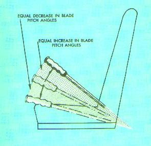

There are four controls in the helicopter that the pilot must use during flight (fig. 27). They are (1) collective pitch control; (2) throttle control; (3) antitorque pedals (auxiliary or tail rotor control); and (4) cyclic pitch control.
Figure 27.- Controls of the helicopter and the principal
function of each control.
The collective pitch lever or stick is located by the left side of the pilot's seat and is operated with the left hand (fig. 28). This lever moves up and down pivoting about the aft end and, through a series of mechanical linkages, changes the pitch angle of the main rotor blades. As the collective pitch lever is raised, there is a simultaneous and equal increase in the pitch angle of all the main rotor blades; as the lever is lowered, there is a simultaneous and equal decrease in the pitch angle. The amount of movement of the lever determines the amount of blade pitch change.

Figure 28.- Collective pitch stick movement produces
equal changes in blade pitch angles.
As the pitch angle of the rotor blades is changed, the
angle of attack of each blade will also be changed. A change in the angle of
attack changes the drag on the rotor blades. As the angle of attack
increases, drag increases and rotor RPM and engine RPM (the needles are
joined) tend to decrease; as the angle of attack decreases, drag decreases
and the RPM tends to increase. Since it is essential that the RPM remain
constant, there must be some means of making a proportionate change in power
to compensate for the change in drag. This coordination of power change with
blade pitch angle change is controlled through a collective pitch
lever-throttle control cam linkage which automatically increases power
when the collective pitch lever is raised, and decreases power when the
lever is lowered.
The collective pitch control is the primary altitude
control. Raising the collective pitch lever increases the rotor's lift and,
through the cam linkage with the throttle, increases engine power. The
collective pitch control is, there, the primary manifold pressure control
(fig. 29).
Figure 29.- Collective pitch stick is primary control
for manifold pressure; throttle is primary control for RPM.
A change in
either control results in a change in both manifold pressure and RPM.
The throttle is mounted on the forward end of the collective pitch lever in the form of a motorcycle-type twist grip. The function of the throttle is to regulate RPM. If the collective pitch-throttle synchronization unit does not automatically maintain a constant RPM when a change is made in the collective pitch stick position, the throttle may be moved manually with the twist grip to make further adjustments of engine RPM. Twisting the throttle outboard increases RPM; twisting it inboard decreases RPM (fig. 30).
Figure 30.- Throttle control: Rotating the throttle
outboard (viewed from the top) increases RPM;
rotating it inboard decreases RPM.
Collective pitch-throttle coordination
Collective pitch is the primary control for manifold pressure; the throttle is the primary control for RPM. Since the collective pitch control also influences RPM, and the throttle also influences manifold pressure each is considered to be a secondary control of the other's functions. Therefore, the pilot must analyze both the tachometer (RPM indicator) and manifold pressure gauge to determine which control to use and how much. To best illustrate the relationship, a few problems with solutions follow:
| Problem: | RPM low, manifold pressure low. | |
| Solution: | Increasing the throttle will increase the RPM and the manifold pressure. | |
| Problem: | RPM low, manifold pressure high. | |
| Solution: | Lowering the collective pitch will reduce the manifold pressure, decrease drag on the rotor, and therefore, increase the RPM. | |
| Problem: | RPM high, manifold pressure high. | |
| Solution: | Decreasing the throttle reduces the RPM and the manifold pressure. | |
| Problem: | RPM high, manifold pressure low. | |
| Solution: | Raising the collective pitch will increase the manifold pressure, increase drag on the rotor, and therefore, decrease the RPM. |
These problems illustrate how one control change accomplishes two purposes. An extension of the reasoning used in the solutions will show how various combinations of control inputs can be coordinated to achieve any desired RPM-manifold pressure setting. As with any other aircraft controls, large adjustments of either collective pitch or throttle should be avoided. All corrections should be accomplished through the use of smooth pressures.
The thrust produced by the auxiliary (tail) rotor is governed by the position of the antitorque pedals. These pedals are located as shown in figure 27. They are linked to a pitch change mechanism in the tail rotor gear box to permit the pilot to increase or decrease the pitch of the tail rotor blades. The primary purpose of the tail rotor and its controls is to counteract the torque effect of the main rotor.
The tail rotor and its controls not only enable the
pilot to counteract the torque of the main rotor during flight, but also to
control the heading of the helicopter during hovering flight, hovering turns
and hovering patterns. It should be thoroughly understood that in forward
flight, the pedals are not used to control the heading of the helicopter
(except during portions of crosswind takeoffs and approaches); rather, they
are used to compensate for torque to put the helicopter in longitudinal trim
so that coordinated flight (that is, neither slipping nor skidding) can be
maintained. The cyclic control is used to change heading by making a
coordinated turn to the desired direction.
The thrust of the tail rotor is dependent upon the
pitch angle of the tail rotor blades and, to a certain extent, upon the
main rotor RPM. (For this particular discussion, we will assume that the
main rotor RPM remains constant.) The pitch angle of the tail rotor blades
determines the size of the bite of air the blades take as they rotate. The
tail rotor may have a positive pitch angle, that is, the rotor bites the
air to the right which tends to pull the tail to the right; or it may have
a negative pitch angle in which case the rotor bites the air to the left,
tending to pull the tail to the left; or it may have zero pitch, in which
case it produces no thrust in either direction.
With the right pedal moved forward of the neutral
position, the tail rotor either has a negative pitch angle or a small
positive pitch angle--the farther forward the the right pedal is, the
larger the negative pitch angle; the nearer the right pedal is to the
neutral position, the more positive the pitch angle the tail rotor will
have; and somewhere in between, the tail rotor will have a zero pitch
angle. As the left pedal is moved forward of the neutral position, the
positive pitch angle of the tail rotor increases until it becomes maximum
with full forward displacement of the left pedal.
With a negative pitch angle, the tail rotor thrust is
working in the same direction as torque reaction of the main rotor. With a
small positive pitch angle, the tail rotor does not produce sufficient
thrust to overcome the torque effect of the main rotor during cruising
flight. Therefore, if the right pedal is displaced forward of neutral
during cruising flight, the tail rotor thrust will not overcome the torque
effect and the nose will yaw to the right
(fig. 31, left).
Figure 31.- Tail rotor pitch angle and thrust in
relation to pedal positions during cruising flight.
With the left pedal in a forward position, the tail
rotor has a medium positive pitch angle. In medium positive pitch, the tail
rotor thrust approximately equals the torque of the main rotor during
cruising flight, so the helicopter will maintain a constant heading in level
flight (fig. 31, middle).
With the left pedal in a forward position, the tail
rotor is in a high positive pitch position. In a high positive pitch
position, tail rotor thrust exceeds the thrust needed to overcome torque
effect during cruising flight so the helicopter nose will yaw to the left
(fig. 31, right).
The above explanation is based on cruising power and
airspeed. Since the amount of torque is dependent on the amount of engine
power being supplied to the main rotor, the relative positions of the pedals
required to counteract torque will depend upon the amount of power being
used at any time. In general, however, the less power being used, the
greater the requirement for forward displacement of the right pedal; the
greater the power being used, the greater the forward displacement of the
left pedal.
The maximum positive pitch angle of the tail rotor is
generally somewhat greater than the maximum negative pitch angle available.
This is because the primary purpose of the tail rotor is to counteract the
torque of the main rotor. The capability for tail rotors to produce thrust
to the left (negative pitch angle) is necessary because, during
autorotation, the drag of the transmission tends to yaw the nose to the
left--in the same direction that the main rotor is turning.
As discussed previously, the total lift-thrust force is
always perpendicular to the tip-path plane of the main rotor. When the
tip-path plane is tilted away from the horizontal, the lift-thrust force is
divided into two components--the horizontal acting force, thrust, and the
upward acting force, lift (fig, 11).
The purpose of the cyclic pitch control is to tilt the tip-path plane in
the direction that horizontal movement is desired. The thrust component
then pulls the helicopter in the direction of rotor tilt. The cyclic control
has no effect on the magnitude of the total lift-thrust force, but merely
changes the direction of this force, thus controlling the attitude and
airspeed of the helicopter.
The rotor disc tilts in the direction that pressure is
applied to the cyclic. If the cyclic stick is moved forward, the rotor disc
tilts forward; if the cyclic is moved aft, the rotor disc tilts aft, and so
on (fig. 32).
Figure 32.- Relationship of cyclic stick position to
rotor disc position and helicopter movement.
So that the rotor disc will always tilt in the
direction that the cyclic stick is displaced, the mechanical linkage between
the cyclic stick and the rotor (through the swash plate) must be such that
the maximum downward deflection of blades is reached in the direction the
stick is displaced and the maximum upward deflection is reached in the
opposite direction. Otherwise, the pilot would have a difficult job of
relating the direction of cyclic stick displacement to the rotor disc tilt.
This is accomplished through the mechanical linkage which decreases the
pitch angle of the rotor blades 90° before they reach the direction of
displacement of the cyclic stick and increases the pitch angle of the rotor
blades 90° after they pass the direction of displacement of the cyclic
stick. Any increase in pitch angle increases the angle of attack; any
decrease in pitch angle decreases the angle of attack.
For example, as the
cyclic stick is displaced forward, the angle of attack is decreased as the
rotor blades pass the 90° position to the pilot's right and is
increased as the blades pass the 90° position to the pilot's left.
Because of gyroscopic precession, maximum downward deflection of the rotor
blades is forward and maximum upward deflection is aft, causing the rotor
disc to tilt forward in the same direction as cyclic stick displacement. A
similar analysis could be made for any direction of displacement of the
cyclic stick.
{kind=link}
{kind=link}
{kind=link}
{kind=link}
{kind=link}
{kind=link}